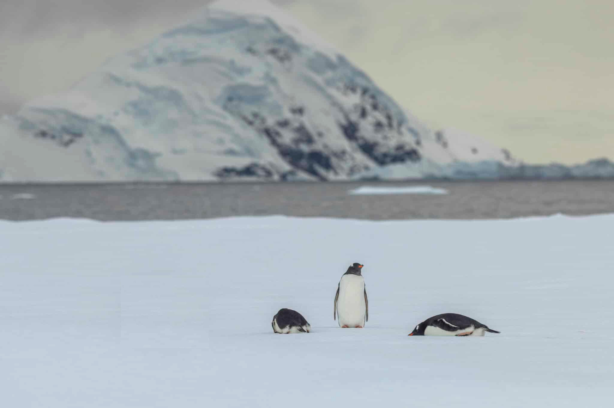

Live
LAT -65.704056
LON -65.991219
--:--:--
The camera is caught in a blizzard! You can just make out the shadows of three penguins, but the picture is too blurry to identify which species they are.

LiveDuring the last expedition, explorers collected the species and measurements of many penguins. The scanner compares your mystery penguin’s clues with those records to predict its most likely species. Look at how similar your penguin is to the predicted species. Can you understand why the scanner made that prediction?
This chart lets you enter bill length, bill depth, flipper length, body mass and sex. The prediction panel gives the most likely penguin species.